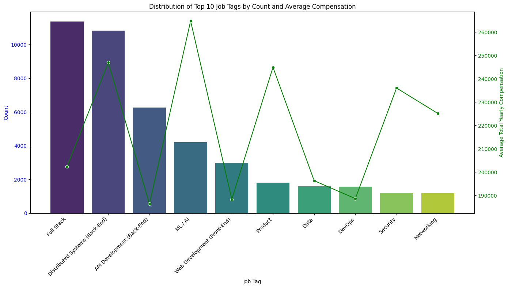
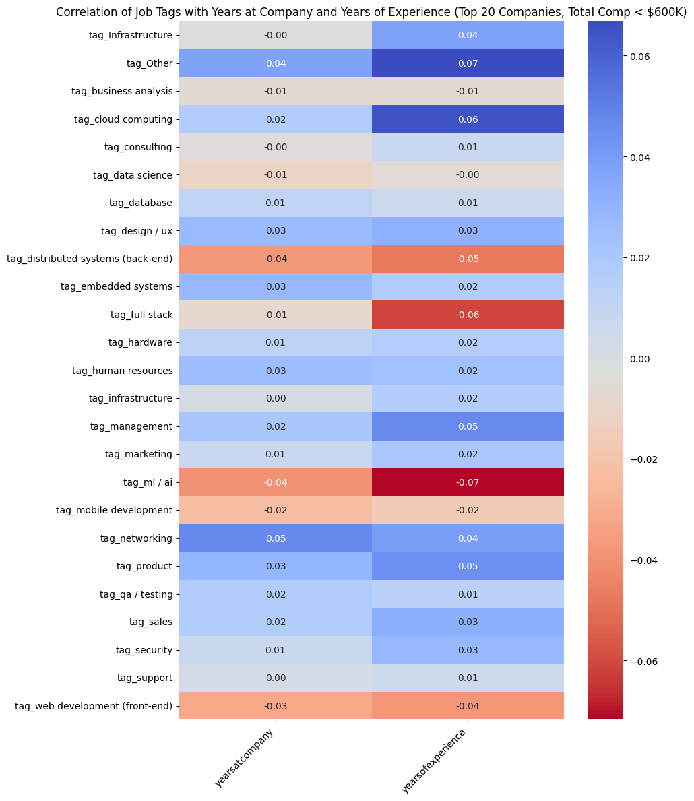
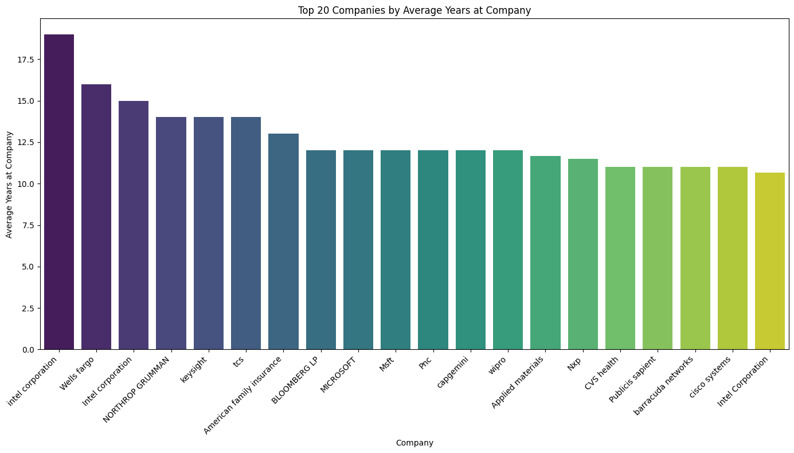
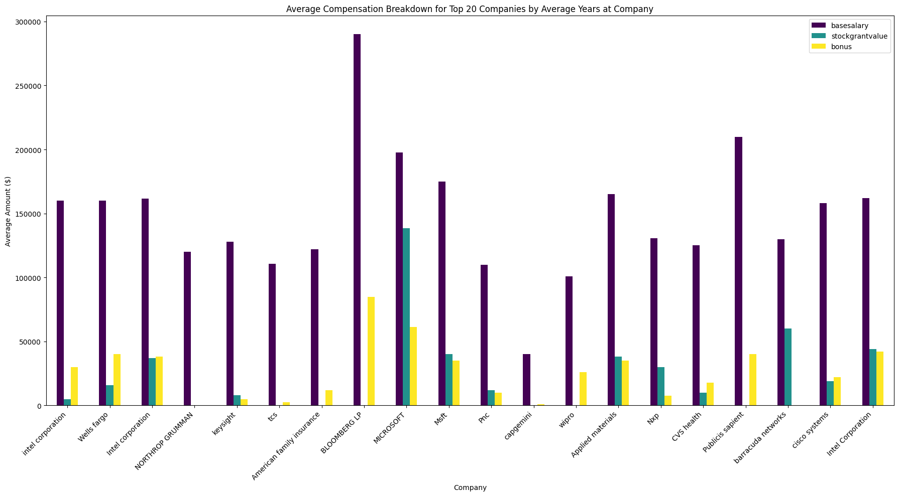
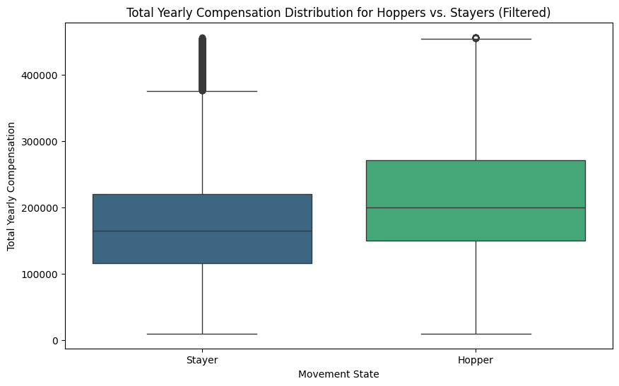
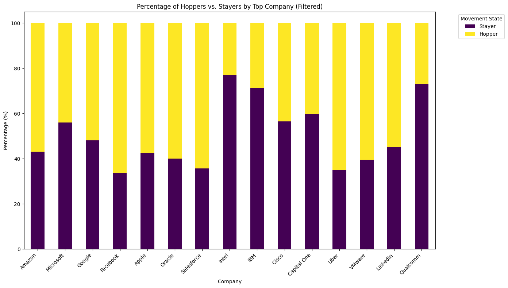
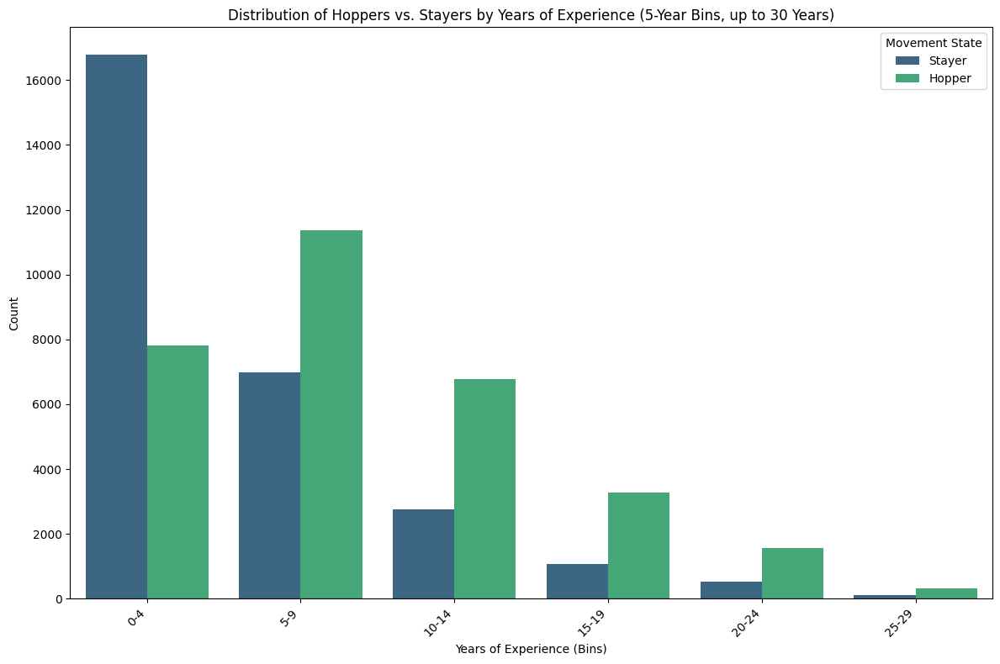
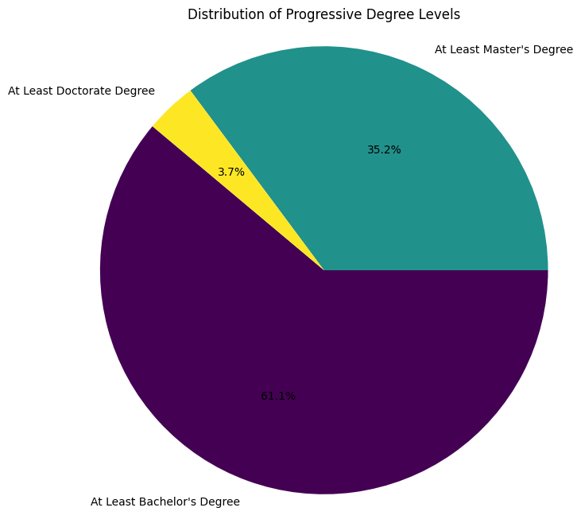

1 Objective
Turn a noisy public compensation survey into a practical decision framework for job seekers: identify which skills are associated with higher pay, compare employers' compensation and retention patterns, evaluate the pay premium associated with job mobility, and assess how well career outcomes can be predicted from the available data.
2 Data & Methodology
Analyzed self-reported Levels.fyi compensation data spanning 219 companies, 786 locations, and 15 standardized job titles. Preparation and analysis included:
- Standardized company, title, and location fields; converted compensation fields to numeric values and checked outliers.
- Imputed missing experience and tenure values and removed noisy free-text fields.
- Grouped free-text job tags into 25 categories, encoded tags and education, and created experience and degree-level features.
- Compared Linear Regression, Gradient Boosting, and Random Forest approaches, including classification and regression models.
- Used Python, pandas, scikit-learn, seaborn, and Plotly.
3 Visual Analysis








4 Insights & Business Outcomes
- Skill investment: ML / AI ($231.6K average predicted compensation) and Distributed Systems ($227.3K) were the highest-paying tags in the analysis. Web Development, ML / AI, Product, and Full Stack also showed strong estimated compensation growth per additional year of experience.
- Company choice: The employers with the highest compensation and the longest average tenure are not necessarily the same. Compare total compensation and its base/stock/bonus mix with retention patterns and personal priorities.
- Job mobility: Hoppers represented 52.4% of records and averaged $213.4K compensation, versus $175.4K for stayers—a 22% observational gap. This association does not establish that changing jobs causes higher pay.
- Career stage: Among employees with 0–4 years of experience, stayers had median compensation of $149K, below the overall dataset median of $191K. The comparison supports evaluating market opportunities, not treating tenure alone as a decision rule.
- Education: Regression baseline estimates were $191,293 for Bachelor's, $200,488 for Master's, and $258,538 for Doctorate. These are model estimates from observational data, not guaranteed returns on a degree.
- Limits: The source is self-reported and may not represent the full workforce. Smaller company samples make tenure comparisons directional, and unmeasured factors such as negotiation and timing affect compensation.
5 Predictive Modeling & Recommendations
Random Forest models used experience, education, location, and job tags as features. Training used 25,880 records and testing used 7,764.
| Outcome | Model result | Interpretation |
|---|---|---|
| Job title / role | 71.2% accuracy | Most predictable outcome in the analysis. |
| Total yearly compensation | R² = 0.47; MAE $48,761 | Moderate signal; much of the variation remains unexplained. |
| Company | 39.1% accuracy | Company choice depends on factors beyond these features. |
| Compensation mix | R² ≈ 0 | Base/stock/bonus allocation is not reliably predicted. |
- Prioritize ML / AI, Distributed Systems, or Product for skill exploration, while considering fit and individual circumstances.
- Separate compensation goals from retention preferences when comparing employers.
- Use the model as a starting point for research and negotiation, not as a verdict or guaranteed forecast.